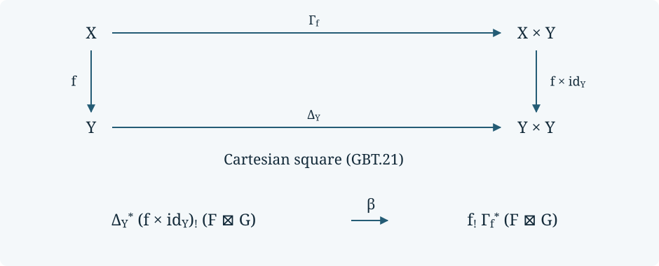

Modern proper base change and arbitrary stable coefficients
This lesson supplies the general base-change and tensor steps after compact supports and covariant Verdier duality. All spaces are locally compact Hausdorff. A stable coefficient category has all small colimits; wherever actual coefficient-valued sheaves are used, it also has all small limits. Presentability, constructibility, boundedness, finite cohomological dimension and a countable exhaustion are not required.
Written by GPT-6.1 Sol (OpenAI). Self-checked by the writing AI. CC0 1.0.
The mathematical sources are Jacob Lurie’s Higher Topos Theory, Sections 7.3.1–7.3.4, and Marco Volpe’s published The six operations in topology, Sections 2.2, 5.2–5.3 and Propositions 6.9, 6.13 and 6.14. The argument below includes the nonabelian proper-map proof and its coefficient extension. The classical bounded comparison in the preceding lessons remains a separate step.
SH02-GBT-0 — Models and the maps to be proved
Write $\mathcal A_T=\operatorname{Shv}(T;\mathrm{Sp})$. These are sheaves for ordinary covering sieves. No hypercompletion is performed. The elementary ambient models used here are presheaf infinity-categories, accessible left exact localization for an infinity-topos, the Yoneda and Kan extension universal properties, and the tensor of cocomplete stable infinity-categories. For the last model its defining property is
$$ \operatorname{Fun}^L(B\otimes C,E) \simeq\operatorname{Fun}^{L,L}(B\times C,E). \tag{GBT.1} $$
All colimits here are in a fixed universe. A larger universe accommodates a coefficient category that is not presentable. Superscript $L$ means that all these colimits are preserved. Presheaf localization, cofinality and the compact-object Ind model are basic categorical models; this lesson does not claim to rebuild their entire simplicial-set foundations.
For any cocomplete stable $E$, put $\mathscr S_T(E)=\mathcal A_T\otimes E$. When $E$ is bicomplete, GBT-4 will identify this with actual $E$-valued sheaves. Defining $\mathscr S_T(E)$ even when $E$ is not complete is necessary: a tensor $C\otimes D$ of bicomplete categories need not itself be bicomplete.
Use a Cartesian square with fixed labels
$$ \begin{array}{ccc} X'&\xrightarrow{q'}&X\\ p'\downarrow&&\downarrow p\\ Y'&\xrightarrow q&Y. \end{array} \tag{GBT.2} $$
For ordinary direct image, the proper base-change map is the mate
$$ \begin{gathered} q^*p_*F\longrightarrow q^*p_*q'_*q'^*F\\ \simeq q^*q_*p'_*q'^*F\\ \longrightarrow p'_*q'^*F. \end{gathered} \tag{GBT.3} $$
The arrows are the unit for $q'^*\dashv q'_*$ and the counit for $q^*\dashv q_*$. We prove invertibility of this particular map when $p$ is proper. For arbitrary $p$, the proper-support map will be constructed from these proper mates and the open-extension mates. Arbitrary choices of equivalences would not establish the required theorem on maps.
SH02-GBT-1 — Compact models with nonstable coefficients
The compact-presentation argument SH02-SXM-1–2 needs only completeness, filtered colimits and their commutation with finite limits. Stability enters later, when support fibres are changed into cofibres. Consequently the compact argument also applies to spaces and to every infinity-topos $E$.
Here are its precise formulas, with terminal object $1$:
$$ \begin{gathered} H_F(K)=\operatorname*{colim}_{U\supset K}F(U),\\ F_H(U)=\operatorname*{lim}_{K\subset U}H(K). \end{gathered} \tag{GBT.4} $$
The compact functor has $H(\varnothing)=1$, has the pullback square $H(K\cup L)=H(K)\times_{H(K\cap L)}H(L)$, and satisfies $H(K)=\operatorname{colim}_{K\Subset L}H(L)$. Neighborhoods are ordered by shrinking, and $K\Subset L$ means that the interior of the compact $L$ contains $K$.
For clarity, the proof continues to work without a zero object. A finite open cover of a compact set admits a finite compact shrinking. For two compacts, neighborhoods of their union are refined by unions of their neighborhoods; neighborhoods of their intersection are refined by intersections of such neighborhoods. For the second assertion, separate the disjoint compact sets $K\setminus W$ and $L\setminus W$, for an open $W\supset K\cap L$, and adjoin $W$ to both separating neighborhoods. Filtered colimits can therefore be moved through the single finite descent pullback. Induction gives finite compact descent; a compact subcover gives arbitrary covering descent for the second formula in (GBT.4).
The inverse maps have explicit cones. A sheaf maps to its limit of compact restrictions. Conversely that limit maps to $F(V)$ by projection to $H_F(\overline V)$ whenever $\overline V\subset U$, then restriction to $V$; these relatively compact opens cover $U$, so descent gives the inverse. For a compact functor, projection gives $\operatorname{colim}_{U\supset K}F_H(U)\to H(K)$. Its inverse comes from $H(L)\to F_H(\operatorname{Int}L)$ for $K\Subset L$. Insertion of a smaller compact neighborhood checks both identities on the original restriction cones. The refinement posets are filtered and contractible. This gives coherent maps, not an interchange of an arbitrary infinite limit with a filtered colimit.
There is a useful combined version. On the poset consisting of the open and compact subsets of $T$, let $\theta F$ have open values $F(U)$ and compact values $H_F(K)$, with their restriction maps. Formula (GBT.4) and its two inverse cones say simultaneously that $\theta F$ is the left Kan extension from opens and the right Kan extension from compacts. An open that is also compact has the same value in the two descriptions. This combined model will fix the adjunction in the next proof.
An infinity-topos satisfies the exactness assumption: realize it as an accessible left exact localization of a space-valued presheaf category. Filtered colimits of spaces commute with finite limits, presheaf operations are pointwise, and the localization preserves finite limits. This also shows why the argument applies before hypercompletion.
SH02-GBT-2 — Compact global sections and closed subspaces
We first prove properness of $\Gamma:\operatorname{Shv}(T)\to\mathcal S$ for compact Hausdorff $T$. Properness means that after any two successive base changes of infinity-topoi, the push-pull mate is invertible.
The base-change model is $\operatorname{Shv}(T;E)=\operatorname{Shv}(T)\times_{\mathcal S}E$ for any infinity-topos $E$. Here is the model’s justification. Write $E$ as a left exact localization of $\mathcal P(D)$, with $D$ a small category with finite limits. In $\mathcal P(\mathcal U(T)\times D)$, impose covering descent in the $T$ direction and the localization in the $D$ direction. Their common local objects are exactly $E$-valued sheaves. To construct the common localization, choose a regular $\kappa$ for which both reflector endofunctors preserve $\kappa$-filtered colimits, alternate their reflectors through $\kappa$ steps, and take colimits at limit stages. The shifted subsequences are cofinal, so the final object is local for both reflectors. Left exactness persists at each step, including the filtered colimits at limit stages. The universal maps into common local objects show that this is a left exact accessible localization. Geometric morphisms into it are pairs of geometric morphisms into $\operatorname{Shv}(T)$ and $E$: on presheaf generators, the corresponding inverse-image functor sends a pair to the product of its two images. It is left exact; products preserve colimits separately in an infinity-topos, so it descends through both sets of relations. Conversely, restriction to the two axes recovers this pair, because each paired generator is the product of the two axis generators. Yoneda extension determines all objects and transformations. This proves the product universal property, including its maps. This is the explicit model behind HTT 7.3.3.9.
Let $a^*:E\rightleftarrows E':a_*$ be a geometric adjunction. In compact models, postcomposition with $a^*$ preserves compact sheaves, since it preserves finite limits and filtered colimits. Its transport to open sheaves is left adjoint to postcomposition with $a_*$. To check this last claim without assuming that $a_*$ preserves filtered colimits, use the combined model of GBT-1:
$$ \begin{aligned} \operatorname{Map}_{\mathcal U}(F,a_*F') &\simeq\operatorname{Map}_{\mathcal K\cup\mathcal U}(\theta F,a_*\theta F')\\ &\simeq\operatorname{Map}_{\mathcal K\cup\mathcal U}(a^*\theta F,\theta F')\\ &\simeq\operatorname{Map}_{\mathcal K}(a^*H_F,H_{F'}). \end{aligned} \tag{GBT.5} $$
The first equivalence uses left Kan extension from opens; the last uses right Kan extension from compacts. The middle equivalence is the pointwise adjunction. Thus it preserves the actual unit and counit. Since $T$ is both compact and open, evaluation at $T$ commutes with this left adjoint:
$$ a^*\Gamma F\simeq\Gamma\widetilde a^*F. \tag{GBT.6} $$
By (GBT.5), this equivalence is the push-pull mate, not merely an equivalence of its two objects. Applying the product model successively to $E$ and $E'$ proves the required universal properness of compact global sections.
Closed inclusions supply the second elementary proper map. For an open subterminal object $u$ in an infinity-topos $B$, the complementary closed subtopos consists of objects $Z$ with $Z\times u\to u$ an equivalence. Its inverse-image localization forces $u$ to become initial. Every left exact inverse image preserves this condition. Under $a^*:B\to B'$, the closed subtopos pulls back to the one complementary to $a^*u$; the inverse image on closed objects is the restriction of $a^*$. Its square with the fully faithful inclusions therefore commutes, and its mate is an equivalence. The universal property of localization proves that this is a pullback of infinity-topoi. Repeating a base change proves properness of a closed inclusion.
For an actual closed $Z\subset T$ this is $\operatorname{Shv}(Z)$. Indeed direct image is $F(V\cap Z)$ and is terminal off $Z$. Conversely, if a sheaf is terminal off $Z$, its values on two opens with the same intersection with $Z$ agree: cover either by their intersection and its complement of $Z$. For a covering of an open of $Z$, choose ambient open extensions and add the complement of $Z$. Descent proves that these values define a sheaf on $Z$ and recover the original sheaf. This establishes the topological closed-subspace model used above.
SH02-GBT-3 — Nonabelian proper base change
We need one further compatibility of models: for a locally compact Hausdorff $T$,
$$ \operatorname{Shv}(T\times W) \simeq\operatorname{Shv}(T)\times_{\mathcal S}\operatorname{Shv}(W). \tag{GBT.7} $$
Here is the compactness check in the locale model. The coproduct of the two open-set locales is generated by formal rectangles $U\otimes V$. Send these to $U\times V$, and send an open $O\subset T\times W$ back to the union of all formal rectangles lying in $O$. To show that these are inverse, suppose $U\times V\subset\bigcup_iU_i\times V_i$. Cover $U$ by interiors of compact $K\subset U$. For each $v\in V$, finitely many $U_i\times V_i$ cover $K\times\{v\}$; intersect their $V_i$’s to obtain an open $V_v$ containing $v$. The relations for finite unions give $\operatorname{Int}K\otimes V_v\leq\bigvee_i U_i\otimes V_i$. Taking unions in $v$ and then in $K$ proves the asserted rectangle relation. Every open is a union of rectangles, so the two locale maps are inverse. The basic equivalence between locales and 0-localic infinity-topoi transfers this to (GBT.7). The inclusion of these topoi preserves limits, as the right adjoint of their localization. This is the full compactness argument in HTT 7.3.1.11.
Now take a proper $p:X\to Y$. Embed $X$ as an open subspace of its one-point compactification $\overline X$, using $X$ itself when it is compact. The graph $e:X\hookrightarrow\overline X\times Y$ is closed. At a boundary point of $\overline X$, take a relatively compact neighborhood of the proposed $y$; its closed inverse image under $p$ is compact in $X$. A neighborhood of the boundary point disjoint from that compact gives a product neighborhood disjoint from the graph. At an ordinary point, the closed-graph argument uses the Hausdorffness of $Y$. Thus $p=\pi_Ye$ with $e$ closed and $\overline X$ compact Hausdorff.
By (GBT.7), $(\pi_Y)_*$ is a base change of compact global sections, which is proper by GBT-2. The closed inclusion is proper by the same lemma. Proper geometric morphisms are stable under composition and base change: insert the two defining Cartesian rectangles and compose their invertible mates; cancellation of each intermediate unit and counit proves the mate for the composite. Consequently $p_*$ is proper as a geometric morphism.
For the topological square (GBT.2), the induced square of infinity-topoi is also Cartesian. Factor it through $\overline X\times Y'\to\overline X\times Y$. This intermediate square is Cartesian by (GBT.7) and the product universal property; its upper closed-subspace square is Cartesian by GBT-2. Pasting gives the claimed Cartesian square. Properness now applies to it. We have proved that (GBT.3) is invertible for space-valued covering sheaves, without a truncation or hypercompleteness assumption. This proves the exact assertion of HTT 7.3.1.18, including the properness steps on which its short printed proof depends.
SH02-GBT-4 — The coefficient equivalence, including nonpresentable coefficients
We establish the equivalence
$$ \eta_T:\mathcal A_T\otimes C\xrightarrow{\sim}\operatorname{Shv}(T;C) \tag{GBT.8} $$
for every stable bicomplete $C$, with no adjoint functor theorem applied to $C$. First let $D_T$ be spectral functors on compact subsets that satisfy the empty-value and finite-union descent conditions, without requiring compact-neighborhood continuity. This is a compactly generated stable category. Here is a concrete verification rather than an identification with all left exact functors on a poset. In the spectral presheaf category let $h_K$ be the spectral Yoneda generator. Impose the compact relations
$$ \begin{gathered} h_\varnothing=0,\\ h_K\amalg_{h_{K\cap L}}h_L\longrightarrow h_{K\cup L}. \end{gathered} \tag{GBT.9} $$
The cofibres of these arrows are compact. The corresponding exact presheaf localization has local objects precisely $D_T$. Its inclusion preserves filtered colimits, since its conditions are finite limits, and preserves finite colimits by stability; it thus preserves all colimits. The localized $h_K$’s are compact and generate: mapping out of them is evaluation at $K$, so a functor annihilated by all of them is zero. This proves compact generation using only the stated presheaf-localization model.
There is a colimit-preserving retraction from $D_T$ onto continuous compact sheaves:
$$ (\phi H)(K)=\operatorname*{colim}_{K\Subset L}H(L). \tag{GBT.10} $$
Continuity follows by inserting an intermediate compact neighborhood into $K\Subset L$: it can be chosen between $K$ and the interior of $L$. The posets of all such intermediate choices are filtered under shrinking. Thus the iterated colimit in (GBT.10) is the same colimit. Finite union descent follows by taking the finite descent squares of $H$ over neighborhoods of $K,L$: their unions and intersections are cofinal neighborhoods of $K\cup L,K\cap L$, by GBT-1. Filtered exactness gives the resulting pullback square. The empty value follows by shrinking to the empty compact. Formula (GBT.10) is the identity on continuous compact sheaves. It preserves all colimits: these are pointwise in both compact categories, since stable colimits preserve finite pullbacks and commute with the continuity colimits. Hence $\mathcal A_T$, by (GBT.4), is a retract of $D_T$ in cocomplete stable categories.
A compactly generated stable category is dualizable in (GBT.1). Explicitly, if $D=\operatorname{Ind}(D^\omega)$, its dual is $\operatorname{Ind}((D^\omega)^{\mathrm{op}})$; evaluation on compact pairs is their mapping spectrum. The coevaluation is the identity bimodule. The coend Yoneda identity says that evaluation followed by this identity bimodule recovers each compact object, and then every object, since compacts generate by colimits. This checks both triangle identities. Here the dual retract can be constructed explicitly. For $i:A\to D$, $r:D\to A$ with $ri=\operatorname{id}_A$, take $B=\operatorname{Fun}^L(A,\mathrm{Sp})$. Precomposition gives $r^*:B\to D^\vee$ and $i^*:D^\vee\to B$, with $i^*r^*=\operatorname{id}_B$; these maps preserve pointwise colimits. Evaluation on $B\otimes A$ is the restriction of evaluation on $D^\vee\otimes D$, since $(Q\circ r)(i a)=Q(a)$. Apply $r\otimes i^*$ to the coevaluation for $D$ to obtain the one for $A$. Moving $i,r$ across evaluation is precisely precomposition; the two triangle composites reduce to those of $D$ and to $ri=1$. Thus these actual functor categories supply the dual without a separate existence assumption for an idempotent splitting. In particular $\mathcal A_T$ is dualizable.
Its dual is $\operatorname{CoShv}(T;\mathrm{Sp})$. Indeed a spectral cosheaf is the same thing as a colimit-preserving functor from $\operatorname{Shv}(T)$ to spectra: extend its values on open representables by Yoneda colimits; the cosheaf condition is exactly the requirement that covering-sieve arrows are inverted. Stabilization makes this equivalently a colimit-preserving functor from $\mathcal A_T$ to spectra. The same argument with values in any cocomplete stable $C$ gives
$$ \begin{gathered} \mathcal A_T^\vee\otimes C\\ \simeq\operatorname{Fun}^L(\mathcal A_T,C)\\ \simeq\operatorname{CoShv}(T;C). \end{gathered} \tag{GBT.11} $$
The first equivalence follows from the duality’s two triangle identities: an element of the tensor gives its evaluated functor, and coevaluation gives the inverse. This argument uses cocompleteness of $C$, not presentability.
Finally transport (GBT.11) through the covariant Verdier equivalences $\mathbb V_T^{\mathrm{Sp}}$ and $\mathbb V_T^C$ proved in SH02-SXM-3–5. This gives (GBT.8) and specifies it on a spectral sheaf $F$ and a coefficient $M$:
$$ \eta_T(F\otimes M) = (\mathbb V_T^C)^{-1}\bigl(M\circ\mathbb V_T^{\mathrm{Sp}}F\bigr), \tag{GBT.12} $$
where $M:\mathrm{Sp}\to C$ is the colimit-preserving functor with $M(\mathbb S)=M$. Colimits of these pure tensors determine the functor and all its transformations. This proves Volpe 5.15–5.16 at the required coefficient scope; it does not silently make a nonpresentable $C$ presentable.
SH02-GBT-5 — Coefficient compatibility and stable proper base change
For cosheaves, direct image is precomposition with inverse image on opens. It commutes with postcomposition by $M:\mathrm{Sp}\to C$. For proper $p$, the support-fibre comparison $\mathbb V_Yp_*F\simeq p_*^{\mathrm{co}}\mathbb V_XF$ is the actual support map of SH02-SXM-7. Compact preimages are cofinal supports, so it is invertible. Combining it with (GBT.12) proves
$$ \eta_Y(p_*^{\mathrm{Sp}}\otimes C) \simeq p_*^C\eta_X. \tag{GBT.13} $$
Proper spectral pushforward is colimit preserving: in compact models it is $\phi(K\mapsto H(p^{-1}K))$. To see that this is the open pushforward’s compact model, an open $W\supset p^{-1}K$ contains $p^{-1}V$ for some neighborhood $V\supset K$: the proper map is closed, so take $V=Y\setminus p(X\setminus W)$, then shrink relatively compactly. All choices have common smaller neighborhoods. Precomposition and $\phi$ preserve filtered colimits and finite limits; stability gives all colimits. The same proof works for every stable bicomplete coefficient category.
The spectral adjunction $p^*\dashv p_*$ can therefore be tensored with $C$, including its unit and counit. Equation (GBT.13) identifies the right adjoint with actual pushforward; it identifies the left adjoint with actual pullback, by the mapping-space uniqueness of adjoints. For an open $j$, support excision gives $\mathbb V j^*\simeq j^*\mathbb V$, so restriction also commutes with $\eta$. Its left adjoint $j_!$ consequently commutes with $\eta$, with its unit fixed. Factor any continuous map as an open followed by a proper map, as in SH02-SXM-7. Composition of the pullback adjunctions and the proper-support formula $f_!=p_*j_!$ now give
$$ f_C^*\simeq f_{\mathrm{Sp}}^*\otimes C, \qquad f_!^C\simeq f_!^{\mathrm{Sp}}\otimes C \tag{GBT.14} $$
under $\eta$. This proves the relevant content of Volpe 5.19, 5.21–5.22 and 6.7, including the maps of the adjunctions.
This also supplies the exceptional adjoint in the nonpresentable case. Apply the pullback construction to the stable bicomplete category $C^{\mathrm{op}}$. On cosheaves, direct image is $(f_*^{C^{\mathrm{op}}})^{\mathrm{op}}$, left adjoint to $(f_{C^{\mathrm{op}}}^*)^{\mathrm{op}}$: this is the opposite of the ordinary pullback/direct-image adjunction. Transport through $\mathbb V$ gives
$$ f^!= (\mathbb V_X^C)^{-1} (f_{C^{\mathrm{op}}}^*)^{\mathrm{op}}\mathbb V_Y^C, \qquad f_!\dashv f^!. $$
The actual direct image on cosheaves is colimit preserving. Its transported left adjoint is exactly the previously defined proper-support operation. Thus exceptional adjoint existence here follows from the explicit opposite pullback, and does not appeal to an adjoint functor theorem on $C$.
For spectra, use the compact spectral model
$$ \operatorname{Shv}(T;\mathrm{Sp}) \simeq\operatorname{Fun}^{\mathrm{lex}} ((\mathrm{Sp}^\omega)^{\mathrm{op}},\operatorname{Shv}(T)). \tag{GBT.15} $$
This is the compact-object model of spectrum objects in an infinity-topos: finite spectral colimits become finite limits in the opposite compact category, and the sphere and its suspensions specify the usual loop-spectrum data. Ind extension reconstructs the spectrum; applying it on each open commutes with covering limits. The right adjoint $h_*$ is postcomposition with space-sheaf $h_*$. Space-sheaf $h^*$ is left exact, so its postcomposition preserves the finite-limit condition too. Pointwise units and counits restrict to this full functor category; thus postcomposition is the actual spectral adjunction. Apply this to every functor and every arrow in (GBT.3). GBT-3 proves that the resulting spectral mate is invertible.
To transport this particular mate, use the two proper adjunctions. Write $\delta:p'^*q^*\simeq q'^*p^*$ for the commuting pullback comparison. The equivalent formula for the spectral mate at $F$ is
$$ \begin{aligned} q^*p_*F &\xrightarrow{\eta^{p'}}p'_*p'^*q^*p_*F\\ &\xrightarrow{p'_*\delta}p'_*q'^*p^*p_*F\\ &\xrightarrow{p'_*q'^*\epsilon^p}p'_*q'^*F. \end{aligned} \tag{GBT.15a} $$
Here is the map comparison with (GBT.3). The right-adjoint comparison $\delta^R:p_*q'_*\simeq q_*p'_*$ is the transpose of $\delta$. For an object $G$, its explicit defining composite inserts the unit of $p'^*q^*\dashv q_*p'_*$, applies $q_*p'_*\delta$, and then applies the counit of $q'^*p^*\dashv p_*q'_*$. The composite unit first inserts $\eta^q$, then $q_*\eta^{p'}q^*$; the composite counit first applies $q'^*\epsilon^pq'_*$, then $\epsilon^{q'}$. Substitute this expression for $\delta^R$ in (GBT.3), between its $q'$-unit and $q$-counit. Naturality moves those two outside structural maps next to their corresponding inside maps. The $q$-unit–counit pair cancels by the triangle identity; the $q'$-unit–counit pair cancels by its triangle identity. The remaining three maps are precisely (GBT.15a).
All six functors in (GBT.15a) preserve colimits: pullbacks do so, and $p,p'$ are proper, so their pushforwards do so by the compact proof above. Their adjunctions, $\delta$ and (GBT.15a) can therefore be tensored with $C$. Equations (GBT.13)–(GBT.14) identify them with the actual coefficient pullbacks and proper pushforwards. The same transpose calculation identifies the transported map with (GBT.3) in coefficient-valued sheaves. This proves general stable bicomplete proper base change, including nonpresentable coefficients. The argument never tensors an arbitrary $q_*$ or $q'_*$. Tensoring (GBT.15a) with any cocomplete stable $E$ also gives proper base change on $\mathscr S_T(E)$, without asserting the existence of actual $E$-valued sheaves when $E$ is not complete.
SH02-GBT-6 — The full proper-support base-change map
For an open Cartesian square, the map $j'_!q'^*\to\bar q^*j_!$ is adjoint to the restriction identity $j'^*\bar q^*j_!=q'^*j^*j_!\simeq q'^*$. For space-valued sheaves it is invertible on each open representable: inverse image takes the open represented by $V$ to the open represented by its preimage, and open extension is the same representable considered in the ambient space. Such representables generate by colimits. Stabilization and (GBT.14) give the same assertion with arbitrary stable bicomplete coefficients, and on $\mathscr S(E)$. This proves the needed open case of Volpe 3.27 without introducing a hypothesis of hypercompleteness.
Now in (GBT.2) let $p$ be arbitrary and choose $p=rj$, with $j:X\hookrightarrow\overline X$ open and $r:\overline X\to Y$ proper. Pull back this factorization. The two arrows in
$$ q^*r_*j_!F\longrightarrow r'_*\bar q^*j_!F \longleftarrow r'_*j'_!q'^*F \tag{GBT.16} $$
are respectively the proper mate of GBT-5 and the open-extension mate above. Both are invertible. Define $\beta_p$ by the first arrow followed by the inverse of the second:
$$ \beta_p:q^*p_!\xrightarrow{\sim}p'_!q'^*. \tag{GBT.17} $$
The proper-support composition equivalences of SH02-SXM-6–7 identify the ends of (GBT.16). A common refinement is concrete: take the closure of the diagonal copy of $X$ in $\overline X_1\times_Y\overline X_2$. The two projections are proper. Its inverse image of either open copy of $X$ is exactly that diagonal copy: on this open it is the closed graph of the other embedding, so taking the closure adds no points there. Thus it is a compactification with proper maps to both models. Pull back this diagram as well. Units and counits compose, their intermediate pairs cancel by the triangle identities, and the common support construction fixes the composition maps. Naturality of those units and counits makes the refinement squares commute; consequently the two zigzags give the same map. The same calculation proves pasting in successive Cartesian squares. In particular this is the map of Volpe 6.9, with its normalization compatible with the existing six-operation pasting lesson. Where the exceptional adjoints are used, transposition gives $p^!q_*\simeq q'_*p'^!$; it is the transpose of (GBT.17).
SH02-GBT-7 — External products at the full coefficient scope
The rectangle product gives
$$ \mathcal A_X\otimes\mathcal A_Y\simeq\mathcal A_{X\times Y}. \tag{GBT.18} $$
To verify the model, first use the space-sheaf tensor, which is the presheaf category on pairs of opens localized at the covering relations in both variables. The product model of GBT-2 identifies it with the product of infinity-topoi. GBT-3’s rectangle argument identifies that product with $\operatorname{Shv}(X\times Y)$. Stabilizing gives (GBT.18), since $\mathrm{Sp}\otimes\mathrm{Sp}\simeq\mathrm{Sp}$. This is Volpe 2.32 with its local compactness check supplied.
For maps $f:X\to X_1$, $g:Y\to Y_1$, the pullback comparison $f^*\boxtimes g^*\simeq(f\times g)^*$ follows on rectangles from $(f\times g)^{-1}(U\times V)=f^{-1}U\times g^{-1}V$. Both sides preserve colimits, so generators determine this comparison and its maps. Coefficient tensoring gives
$$ \begin{gathered} \operatorname{Shv}(X;C)\otimes\operatorname{Shv}(Y;D)\\ \simeq\mathscr S_{X\times Y}(C\otimes D). \end{gathered} \tag{GBT.19} $$
For two open maps, $f_!\boxtimes g_!$ is left adjoint to $f^*\boxtimes g^*$; tensor the two units and counits to verify this adjunction. Uniqueness of this adjoint and the rectangle comparison identify it with $(f\times g)_!$. For two proper maps use instead the adjunction $f^*\boxtimes g^*\dashv f_*\boxtimes g_*$, whose functors are all colimit preserving by GBT-5. Its right adjoint is $(f\times g)_*$. For arbitrary maps write $f=rj$, $g=sk$. Then $f\times g=(r\times s)(j\times k)$, with its first map proper and second open. The two cases and the proved composition identification give
$$ f_!\boxtimes g_!\simeq(f\times g)_! \quad\text{on }\mathscr S_{X\times Y}(C\otimes D). \tag{GBT.20} $$
All right-hand functors on this tensor model are defined by the spectral functor tensored with $C\otimes D$. We have proved the exact broad assertion of Volpe 6.13, retaining its target even when $C\otimes D$ is not bicomplete. No finite rank or perfect tensor factor was used.
SH02-GBT-8 — Projection and its normalized map
For $F\in\operatorname{Shv}(X;C)$ and $G\in\operatorname{Shv}(Y;D)$, their external product lies in $\mathscr S_{X\times Y}(C\otimes D)$. Define the tensor on a single space by diagonal pullback. Consider the actual graph square
$$ \begin{array}{ccc} X&\xrightarrow{\Gamma_f}&X\times Y\\ f\downarrow&&\downarrow f\times\operatorname{id}_Y\\ Y&\xrightarrow{\Delta_Y}&Y\times Y. \end{array} \tag{GBT.21} $$

The reproducible figure source retains both arrangements and their map specification.
It is Cartesian: a pair $(x,y)$ over $(y,y)$ has $f(x)=y$, so it is precisely the graph. Apply GBT-6 on the coefficient model $\mathscr S(C\otimes D)$, and GBT-7 to $f\times\operatorname{id}$. This gives the following composite of specified equivalences:
$$ \begin{aligned} f_!F\otimes G &=\Delta_Y^*(f_!F\boxtimes G)\\ &\simeq\Delta_Y^*(f\times\operatorname{id})_!(F\boxtimes G)\\ &\xrightarrow{\ \beta\ }f_!\Gamma_f^*(F\boxtimes G)\\ &\simeq f_!(F\otimes f^*G). \end{aligned} \tag{GBT.22} $$
The last comparison is the rectangle pullback identity followed by diagonal pullback. The projection map in the original course has the direction of this composite: $\alpha_f:f_!F\otimes G\to f_!(F\otimes f^*G)$. For a proper map its transpose under $f^*\dashv f_*$ is $f^*f_*F\otimes f^*G\to F\otimes f^*G$, the counit tensored with the identity. This follows by transposing the proper mate and the right-adjoint external-product comparison in (GBT.22); the intermediate unit and counit cancel. For an open map, take open representables in both variables: both sides are the representable intersection in the ambient space and the arrow is its identity. Colimit extension verifies all objects. These are exactly multiplication of a supported section by the pulled-back coefficient section. Factoring a general $f$ as proper after open, the mate cancellation and composition from GBT-6 give their composite, hence the same supported multiplication map. Thus (GBT.22) is the normalized map of the original course’s (SB.12), not its opposite. The proof establishes Volpe 6.14 with arbitrary stable bicomplete $C,D$, on objects and maps.
If $C=D$ has a symmetric monoidal tensor preserving colimits separately, its multiplication $\mu:C\otimes C\to C$ takes this formula to the ordinary $C$-valued projection formula. The comparison $\eta$, pullback and proper support commute with coefficient multiplication, by (GBT.12)–(GBT.14), so applying $\mu$ preserves the displayed map.
For a closed coefficient tensor, we first construct the sheafification used in its adjunction, including when $C$ is not presentable. For an open $U\subset T$, let $j_U:U\hookrightarrow T$, let $a_U:U\to *$, and put
$$ \begin{gathered} Q_U(M)=j_{U!}a_U^*M,\\ \operatorname{Map}(Q_U(M),F)\\ \simeq\operatorname{Map}_C(M,F(U)). \end{gathered} \tag{GBT.22a} $$
The equality is the composite of the actual open and ordinary adjunctions from GBT-5. Every $C$-valued presheaf has its coend Yoneda presentation by the presheaves $y_U\otimes M$. Extend $y_U\otimes M\mapsto Q_U(M)$ by that presentation to a colimit-preserving functor $L_C$ from presheaves to sheaves. Mapping its defining coend into a sheaf $F$, and using (GBT.22a), gives exactly the presheaf mapping space into the underlying presheaf of $F$. Thus $L_C\dashv i_C$, where $i_C$ is the full inclusion. Its counit is invertible by full faithfulness. This constructs sheafification without an adjoint functor theorem on $C$.
The open base-change and rectangle pullback comparisons give $Q_U(M)\otimes Q_V(N)\simeq Q_{U\cap V}(M\otimes N)$. It is the identity on the constant coefficients over the intersection, extended by zero. Extend this actual comparison by colimits separately in the two presheaf variables. The Yoneda presentation then gives $L_C(P\otimes_{\rm pt}Q)\simeq L_CP\otimes L_CQ$, including its maps. Here $\otimes_{\rm pt}$ is pointwise presheaf tensor and the tensor on sheaves is the diagonal tensor already defined above. In particular the localization identifies that tensor with sheafified pointwise tensor.
For sheaves $F,G$, define internal Hom on an open $U$ by the end of the coefficient internal Homs of their presheaf restrictions to opens in $U$. Completeness supplies the end. A covering of $U$ can be imposed in its target entries $G(V)$; target descent and commutation of limits make this end satisfy covering descent. It is therefore a sheaf. The presheaf tensor–Hom adjunction followed by $L_C\dashv i_C$ and the preceding tensor comparison proves its actual sheaf tensor–Hom adjunction. Use the exceptional adjoint $f^!$ constructed in GBT-5. For a test sheaf $A$, adjunction and (GBT.22) give
$$ \begin{gathered} \operatorname{Map}(A,f_*\underline{\operatorname{Hom}}_X(F,f^!G))\\ \simeq\operatorname{Map}(F\otimes f^*A,f^!G)\\ \simeq\operatorname{Map}(f_!F\otimes A,G)\\ \simeq\operatorname{Map}(A,\underline{\operatorname{Hom}}_Y(f_!F,G)). \end{gathered} \tag{GBT.23} $$
Likewise, testing on $E$ and moving $f_!$ through the tensor gives
$$ f^!\underline{\operatorname{Hom}}_Y(G,H) \simeq\underline{\operatorname{Hom}}_X(f^*G,f^!H). \tag{GBT.24} $$
Yoneda makes these identities of the actual transposed maps. The internal Hom assertions require the stated closed tensor; neither that requirement nor existence of $f^!$ is inferred merely from a colimit-preserving functor on a nonpresentable category.
SH02-GBT-9 — Reading and specialization
The proof has three independent mechanisms. Compact restriction makes compact global sections commute with inverse image. The closed graph then proves nonabelian proper base change. Spectral stabilization and the covariant-Verdier coefficient equivalence transfer its actual mate to general coefficients. Finally the graph square (GBT.21) turns external products and base change into the projection formula.
For the original course, take $C=D_\infty(k)$. The derived module coefficient proof provides the symmetric monoidal comparison with $Hk$-modules. The bounded section recognition proof identifies the sectionwise uniformly bounded-below image, and the existing classical proper-support comparison identifies $f_!$ there. Tensor formulas restrict to arbitrary $D^+$ coefficients under the course’s finite global dimension hypothesis on $k$, which supplies a uniform lower bound for their derived tensor. The general modern theorem above does not require that ring hypothesis. No equivalence with all unbounded classical sheaf complexes is asserted. The separate hypothesis that $f_!$ has cohomological dimension at most $r$ on all module sheaves is retained when restricting the exceptional adjoint to $D^+$. Testing on each free open sheaf gives the uniform section lower bound $a-r$ for $f^!B$ when $B\in D^{\geq a}$; bounded recognition then gives $f^!D^{\geq a}\subset D^{\geq a-r}$. General modern adjoint existence is not substituted for that bounded classical argument.
Worked check. For the discrete space $I=\mathbb N$ and $a:I\to *$, compact subsets are precisely finite subsets. For a family $(M_i)$ in a stable bicomplete coefficient category,
$$ a_!(M_i)=\bigoplus_iM_i,\qquad a_*(M_i)=\prod_iM_i. $$
For any coefficient $G$, (GBT.22) is the colimit-distributivity map $(\bigoplus_iM_i)\otimes G\to\bigoplus_i(M_i\otimes G)$: its restriction to the $i$-th summand is the identity on $M_i\otimes G$. It is invertible because the coefficient tensor preserves colimits separately. This checks the projection map for a nonproper map and arbitrary coefficients.
The properness step for unrestricted direct image cannot be skipped. For spectral families $F_n(i)=\mathbb S$ when $i\leq n$ and zero otherwise, $\operatorname{colim}_n a_*F_n=\bigoplus_i\mathbb S$, whereas $a_*\operatorname{colim}_nF_n=\prod_i\mathbb S$. On $\pi_0$ the comparison is the proper inclusion $\bigoplus_i\mathbb Z\to\prod_i\mathbb Z$. Thus the filtered-colimit assertion used for a proper $p_*$ is visibly false for this nonproper $a_*$, while proper-support projection still holds.
Human-source locators. Jacob Lurie, Higher Topos Theory, 7.3.1.1–7.3.1.6 (the mate and properness), 7.3.1.11 and 7.3.3.9 (product models), 7.3.2.10–7.3.2.12 (closed subspaces), 7.3.4.9–7.3.4.11 (compact models and proper global sections), and 7.3.1.16–7.3.1.18 (nonabelian proper base change). The selected proof bodies occupy PDF pages 768–774, 779–787 and 789–794; printed page numbers are 18 lower. The author-hosted edition retains the book’s 2009 publication identity.
Marco Volpe, The six operations in topology, published version, Journal of Topology 18 (2025), e70050; institutional published copy. Selected proof locators: 2.17–2.25 and 2.32 (coefficient and rectangle models), 3.27–3.28 (open mates and graph projection), 5.13–5.22 (compact regularization, dualizability and coefficient compatibility), and 6.7, 6.9, 6.13–6.14. The selected pages are 14–19, 33–35, 45–51 and 54–56. The published article is CC BY 4.0. These mathematical sources receive scholarly attribution; this independently written lesson and its figure sources are dedicated to CC0 1.0.